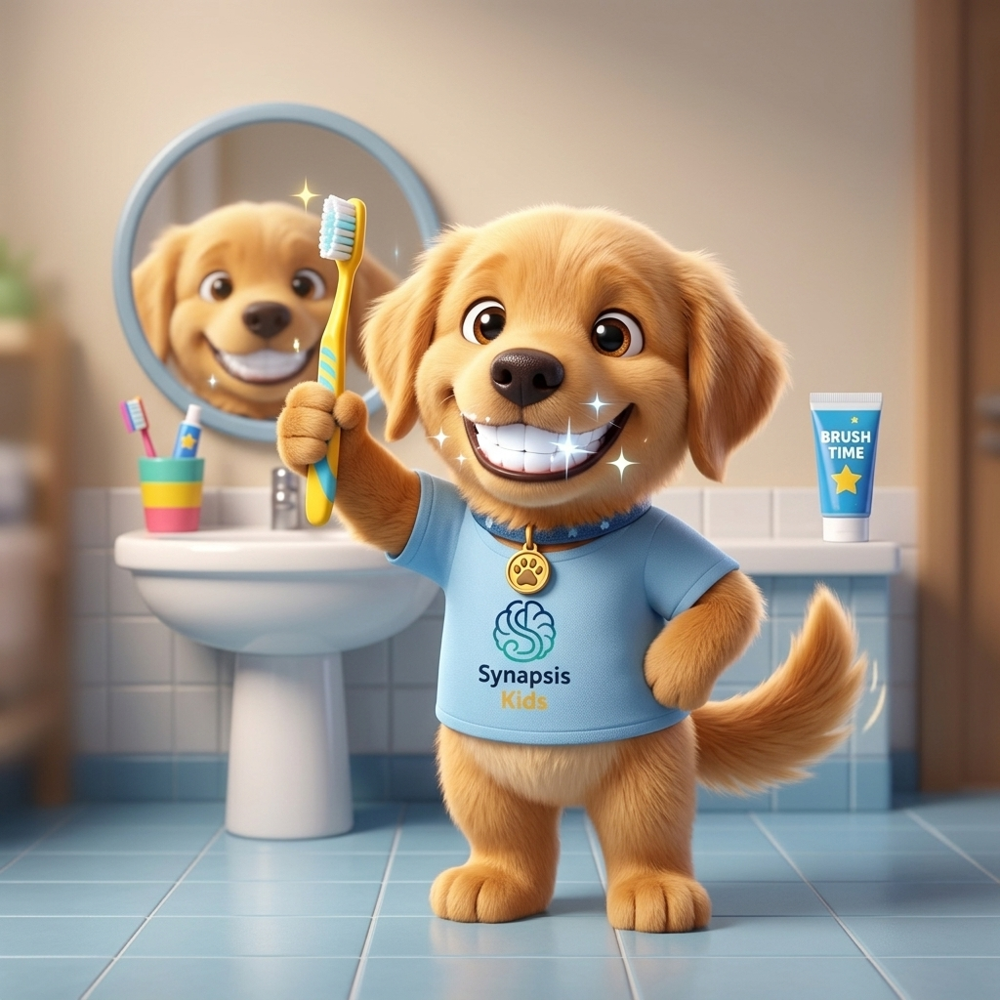

Tudo Conectado: Do Paciente à Gestão Clínica de Alto Padrão
Migre de outro sistema em 1 clique sem redigitar pacientes, capacite sua equipe em 15 minutos com simulação segura e entregue um portal moderno no WhatsApp do paciente. Clique nas abas para explorar:
Usa outro software atualmente? Mude para o Synapsis Clínico em 1 Clique sem Redigitar Pacientes ou Perder Histórico.
Sabemos que sua base de pacientes, histórico de sessões e registros financeiros são patrimônios inegociáveis. Nosso motor inteligente lê a exportação do seu sistema atual (PsicoManager, iClinic ou planilhas Excel/CSV/XLSX), importa cadastros completos com saneamento de CPFs, resgata sessões passadas e histórico financeiro, e mapeia múltiplos responsáveis de menores automaticamente. Zero retrabalho e sem interrupção da sua agenda.
Exporte seus Dados
Gere arquivos de pacientes, sessões ou financeiro no painel do seu sistema atual (Art. 18 LGPD).
Migração Inteligente
Importação cruzada de pacientes, sessões realizadas e conciliação de histórico financeiro.
Transição sem Atrito
Acompanhamento assistido da nossa equipe para garantir integridade clínica e fiscal total.
✓ Pacientes, CPFs e múltiplos responsáveis mapeados
✓ Histórico de sessões passadas importado na linha do tempo
✓ Pagamentos, recibos e livro-caixa conciliados
✓ Criptografia AES-256 e conformidade com 4 Conselhos
Sua Clínica Opera com Maestria no 1º Dia: O Fim dos Manuais e Treinamentos Massantes.
Chega de perder horas ensinando rotinas repetitivas ou obrigar colaboradores a assistir vídeos passivos de 40 minutos. Com o Copiloto Clínico com IA do Synapsis, psicólogos e secretárias contam com um mentor inteligente 24/7 direto na interface: aponte para qualquer botão ou faça qualquer pergunta para receber o passo a passo operacional exato com embasamento no CFP, LGPD e Receita Federal.
Modo Lente: Apontar e Explicar com IA
Ative a mira de inspeção e clique em qualquer botão, aba, gráfico ou tabela da tela. A IA analisa o elemento em tempo real e exibe exatamente o que ele faz, como operar e qual o impacto no consultório.
Orientação Passo a Passo por IA
Pergunte em linguagem natural: "Como ratear despesas entre 3 psicólogos?", "Como emitir NFS-e para avaliação?" ou "Como escriturar o Carnê-Leão?". O Copiloto responde em etapas claras com botões de atalho direto para a tela.
Compliance Ético & Fiscal Integrado
A IA conhece as regras do Código de Ética e avisa sobre limites de sigilo (ex: impedindo que secretárias vejam dados clínicos), obrigatoriedade de guarda de 5 anos e regras de dedução legal no Livro-Caixa.
Zero Configuração Técnica: Inteligência Pronta e Inclusa no Seu Plano
Você e sua equipe não precisam criar contas em plataformas de nuvem, nem contratar pacotes de IA à parte ou cadastrar cartões em moedas estrangeiras. O Copiloto Clínico com Google Gemini já vem embutido nativamente na assinatura, pronto para responder e acelerar a rotina da sua clínica desde o primeiro segundo.
POPs Clínicos & Telemetria de Conformidade da Equipe
No módulo de colaboradores, o gestor acompanha em tempo real o alinhamento da equipe aos Procedimentos Operacionais Padrão (POPs): uso do prontuário eletrônico seguro, rotina de cobranças e faturamento correto de notas. Você garante que a clínica inteira segue o mesmo padrão de excelência e conformidade regulatória.
O Seu Consultório no Bolso do Paciente. Com Zero Atrito e Adesão Imediata.
Chega de forçar pacientes a baixar aplicativos pesados de 80MB que acabam desinstalados, ou de perder horas no WhatsApp respondendo "qual é o PIX?" e "me envia o recibo do IR". O Synapsis Paciente roda direto no navegador mobile via link do WhatsApp: login por código OTP ou PIN de 4 dígitos, confirmação de presença em 1 toque, escalas terapêuticas e blindagem ética inegociável do prontuário confidencial.
Quarta-feira, 15:00
Dra. Camila Duarte • Psicoterapia Infantil
Preenchida no celular • Pontuação e severidade calculadas direto no prontuário.
Adesão de 100%: Web App PWA sem Download na App Store ou Google Play
Link direto no WhatsApp • Código OTP de 6 dígitos ou PIN de 4 númerosO paciente não precisa ter memória livre no celular, memorizar senhas complexas ou baixar 80MB de aplicativo na loja. Ele recebe um link convidativo, digita o código do WhatsApp e já está dentro em 3 segundos. Adesão imediata até para idosos e pais ocupados.
Blindagem Ética Absoluta do Prontuário (CFP 01/2009 e 06/2019)
Cofre de documentos oficiais • Sigilo técnico estrito das anotações de sessãoO paciente visualiza e baixa atestados, declarações de comparecimento e laudos assinados com prova criptográfica Hash SHA-256. Suas anotações íntimas de sessão, hipóteses diagnósticas e registros confidenciais nunca são expostos, assegurando 100% de conformidade com o Código de Ética Profissional do Psicólogo.
Diário TCC & Escalas de Ansiedade e Depressão (GAD-7 / PHQ-9)
Engajamento entre sessões com cálculo de gravidade automático no prontuárioEnvie tarefas de Terapia Cognitivo-Comportamental (Diário de Pensamentos Automáticos: Situação, Emoção, Pensamento) e escalas psicométricas oficiais. O paciente responde em toques rápidos no celular e o sistema calcula o escore e o nível de severidade (Mínima, Leve, Moderada, Grave), injetando o resultado na ficha do paciente.
Confirmação em 1 Toque, Perfil Familiar & Trava de Cancelamento de 24h
Redução de absenteísmo • Proteção financeira contra faltas de última horaO paciente confirma presença em 1 toque e escolhe novos horários livres sozinho com mais de 24 horas de antecedência. Caso tente desmarcar de última hora, o sistema impede o cancelamento sumário, alerta sobre a política de cobrança da sessão e direciona a solicitação para a recepção. Mães e pais alternam entre múltiplos filhos no mesmo login sem misturar prontuários.
Reduza em mais de 70% as mensagens operacionais na recepção do seu consultório.
Mais autonomia e elegância para os seus pacientes, menos tempo gasto cobrando comprovantes ou reenviando recibos de Imposto de Renda.
Mais Previsibilidade, Menos Ansiedade: Da Infância à Vida Adulta
O aplicativo de apoio à rotina e comunicação alternativa (CAA/ARASAAC) com validação neuropsicológica (ABA e TEACCH). 100% gratuito e sem anúncios para os pacientes e famílias da sua clínica — conectando o consultório à casa do paciente.

Panquecca
A amiga carinhosa que modela tarefas e celebra cada conquista
💡 Por que a Panquecca transforma o dia da criança:
Modelagem Visual Concreta
A Panquecca demonstra a execução real: escovando os dentes, banho e comendo frutas. A criança aprende por imitação visual natural.
Reforço Positivo Imediato
Confetes e sorrisos ao concluir cada passo. Dopamina saudável e autoeficácia sem castigos ou cobranças estressantes.
Voz Serena sem Ruídos
Sem alarmes estridentes de celular. Sons acolhedores e modulação suave para respeitar a hipersensibilidade auditiva.
Vínculo & Previsibilidade
A mesma personagem acolhedora do despertar à hora de dormir, desarmando crises em transições difíceis.
 Escovação Dental
Escovação Dental
Uma ferramenta que evolui com as fases da vida
A previsibilidade visual e o combate à disfunção executiva não têm idade. O sistema adapta-se perfeitamente a cada fase:
Pronto para prescrever aos seus pacientes?
Funciona direto no navegador do celular, tablet ou computador. Grátis para sempre.
Synapsis Clínico vs. Softwares Tradicionais
Veja por que o Synapsis Clínico é a escolha técnica superior para clínicas que exigem segurança jurídica e controle financeiro absoluto.
Clique para abrir a auditoria completa de prontuários, segurança AWS Brasil, SHA-256 e normas CFP.
| Recurso / Funcionalidade | Synapsis Clínico | Softwares Tradicionais de Psicologia | Softwares Genéricos | Planilhas Excel |
|---|---|---|---|---|
| Prontuário com 5 Seções CFP 06/2019 Estrutura normativa obrigatória orientada | ✅ Nativo e Guiado | ⚠️ Campo livre / Modelos | ❌ Foco médico | ❌ Risco ético grave |
| Prova Criptográfica com Hash SHA-256 Garantia matemática contra alterações retroativas | ✅ Sim (Grau Pericial) | ❌ Apenas log comum | ❌ Inexistente | ❌ Inexistente |
| Infraestrutura em Nuvem & Soberania de Dados (LGPD) Data Center no Brasil (São Paulo, sa-east-1), certificações ISO/SOC e guarda legal de 5 anos | ✅ Nuvem AWS Brasil (Uptime 99.99%) | ⚠️ Servidores no exterior ou VPS simples | ❌ Sem garantia de soberania nacional | ❌ Disco local desprotegido |
| Módulo Exclusivo de Avaliação Neuropsicológica Pacotes de sessões, testes normativos e laudos CID-11 | ✅ Módulo Nativo | ❌ Inexistente | ❌ Inexistente | ❌ Desorganizado |
| Repasse APENAS sobre Sessões Pagas Blindagem absoluta contra calotes de pacientes | ✅ Regra de Ouro Nativa | ⚠️ Relatório sem trava | ❌ Requer ERP extra | ⚠️ Conferência manual |
| Extrato Oficial em PDF com Chave PIX Lote fechado com quitação mútua assinada | ✅ Em 1 Clique | ❌ Exportação simples | ❌ Não possui | ❌ Não possui |
| Zero-Knowledge (Sigilo Financeiro da Clínica) Psicólogo vê sua produção sem ver o lucro da clínica | ✅ Blindagem Total | ⚠️ Exige relatórios manuais | ❌ Acessos amplos | ❌ Planilhas circulam |
| Roteamento de WhatsApp para Responsáveis Diferenciação automática de pai/mãe/tutor de menores | ✅ Inteligente | ❌ Telefone principal | ❌ Telefone principal | ⚠️ Erros manuais |
| Switch Toggle Liga/Desliga de Repasse Adapta-se a consultórios solo ou coworking | ✅ 1 Clique | ❌ Rígido por plano | ❌ Rígido | ❌ Retrabalho |
| Conciliação Automática via Webhook (Asaas / PIX) Baixa instantânea no caixa, liberação da trava de repasse e zero conferência manual de extrato | ✅ Instantânea via Webhook (Sem conferir extrato) | ⚠️ Exige conferência manual de extrato | ❌ Processamento em lotes manuais | ❌ Extrato bancário na mão |
| Cobrança Parcelada de Pacotes Neuropsicológicos Carnê/PIX parcelado de avaliações, controle de vencimentos e baixa por sessão | ✅ Nativo em até 12x Asaas (Sessões vinculadas) | ⚠️ Cobrança avulsa sem amarração com pacote | ❌ Sem suporte a pacotes clínicos | ❌ Caos em anotações manuais |
| Migrador Universal em 1 Clique (CSV / XLSX) Importação direta de planilhas com saneamento de CPFs na Receita e múltiplos responsáveis | ✅ Homologado (Saneamento RFB + Pais/Tutores) | ❌ Não exportam higienizado / barreira de saída | ❌ Requer digitação manual ou consultoria paga | ❌ Digitação manual paciente por paciente |
| Copiloto Clínico com IA & Modo Lente (In-App AI Assistant) IA generativa embutida 24/7: tira-dúvidas de rotinas, passo a passo operacional e inspeção contextual de qualquer botão com embasamento no CFP e LGPD | ✅ Nativo (Copiloto IA + Modo Lente) | ❌ Manuais em PDF / Vídeos de 40min que ninguém vê | ❌ Treinamento terceirizado pago | ❌ Cada colaborador por si |
| Portal do Paciente Mobile (Synapsis Paciente) Web App PWA (sem baixar loja), login WhatsApp OTP / PIN 4 dígitos, confirmação 1 toque e cofre IRPF | ✅ Nativo (PWA Zero Atrito) | ⚠️ Exige baixar app de 80MB (baixa adesão) | ❌ Inexistente ou apenas teleconsulta | ❌ Tudo manual no WhatsApp |
| Atividades TCC & Escalas (GAD-7 / PHQ-9) com Auto-Escore Questionários clínicos respondidos no celular com pontuação lançada na evolução em tempo real | ✅ Integrado no Prontuário | ❌ Apenas formulários em PDF estático | ❌ Não possui | ❌ Formulários soltos no Google Forms |
| Emissão Direta de NFS-e Municipal (PJ / Certificado A1) Integração oficial com prefeituras, 1 clique na baixa, DANFSE PDF + XML e envio no WhatsApp | ✅ Nativo (1 Clique + WhatsApp) | ✅ Disponível (Líderes possuem) | ✅ Disponível (Foco hospitalar) | ❌ Inexistente (Digitação na prefeitura) |
| Carnê-Leão Web e-CAC (CSVs Homologados) Exportação oficial de rendimentos e despesas sem redigitação no portal | ✅ Nativo em 1 Clique | ❌ Inexistente (digitação manual) | ❌ Não atende autônomo PF | ❌ Risco alto de autuação |
| Motor de Apuração da DARF 0190 & Livro-Caixa Tabela progressiva, dependentes, INSS autônomo e transporte de prejuízo anual | ✅ Cálculo em Tempo Real | ❌ Não calcula impostos | ❌ Inexistente | ⚠️ Fórmulas propensas a erro |
| Dedução Automática de Sublocação & Rateio de Coworking Taxas retidas pela sala abatem no Livro-Caixa evitando bitributação | ✅ Blindagem Fiscal Total | ❌ Tributa o valor bruto retido | ❌ Sem suporte a clínicas | ⚠️ Rateio manual desordenado |
| Blindagem Anti-Malha Fina (IN RFB nº 1.531/2015) Segregação estrita entre CPF Titular do Pagamento e CPF do Paciente | ✅ Segregação Nativa | ⚠️ Misturam CPFs no recibo | ❌ Sem campos normativos | ❌ Inconsistências frequentes |
Seus Prontuários e Finanças Hospedados no Brasil na Maior Nuvem do Mundo
Diferente de sistemas tradicionais que operam em servidores genéricos ou fora do país, o Synapsis Clínico é sustentado pela infraestrutura da Amazon Web Services (AWS) com data centers físicos em São Paulo (Região sa-east-1), garantindo soberania nacional, latência mínima e conformidade legal inegociável.
Soberania Nacional & LGPD (Art. 33)
Dados clínicos e anamneses de pacientes brasileiros nunca deixam o território nacional. Total blindagem jurídica contra transferências internacionais desprotegidas.
Criptografia AES-256 & Snapshots
Proteção criptográfica dupla em repouso e em trânsito (SSL/TLS 1.3). Rotinas automatizadas de backup e retenção legal de 5 anos nos termos do CFP.
Certificações ISO 27001 & SOC 2
O mesmo padrão de auditoria física e lógica adotado por hospitais de excelência e pelas maiores instituições financeiras do Brasil e do mundo.
Planos Feitos para a Sua Realidade Clínica
Sem pegadinhas com pacotes extras de WhatsApp e sem limites artificiais de pacientes. Teste por 14 dias com todas as funcionalidades liberadas.
👑 Vantagem Exclusiva da Turma Pioneira: As 20 vagas do Clube das Fundadoras garantem 3 meses de gratuidade total em qualquer plano selecionado e 50% de desconto vitalício na continuidade.
Perguntas Frequentes de Clínicas, Gestores e Terapeutas
Tire suas dúvidas sobre o Projeto Terapêutico Singular (PTS), o sigilo ético entre os conselhos (CFP, CFFa, COFFITO, ABPp), a Rotina Kids e o suporte fiscal.
Faça Parte do Clube das Fundadoras
Uma oportunidade exclusiva para psicólogas, neuropsicólogas e gestores pioneiros que desejam elevar a governança clínica e participar da construção da nova referência nacional em software de psicologia.
3 Meses Gratuitos
Acesso irrestrito a todas as funcionalidades durante 90 dias, sem cartão.
50% Vitalício
Mensalidade congelada com 50% de desconto para sempre na assinatura.
Migração Grátis
Saneamento e importação segura dos seus pacientes de qualquer sistema em minutos.
Contrato Blindado
Download imediato do Modelo de Contrato de Avaliação e Psicoterapia pronto.
Garanta Sua Vaga no Clube das Fundadoras
Preencha seus dados para assegurar os 3 meses gratuitos, o desconto vitalício e receber agora o Modelo de Contrato Blindado.